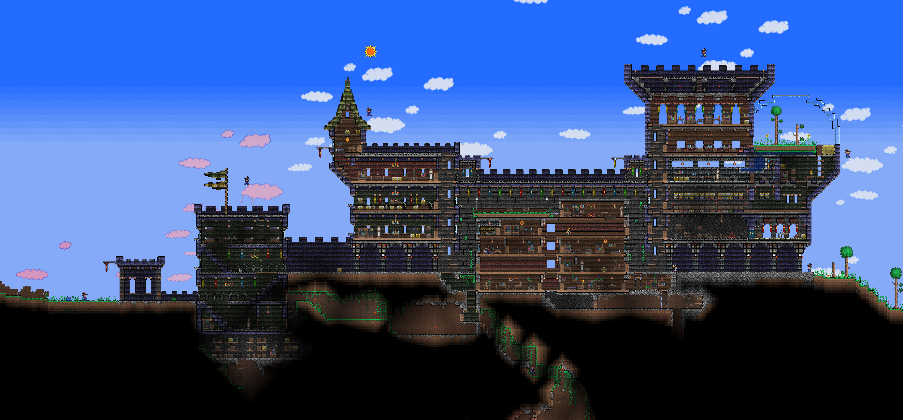
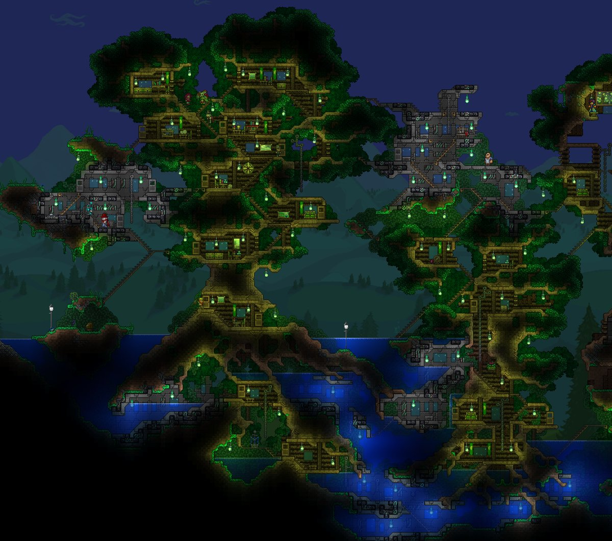

If you've never heard of Terraria, please stop what you're doing
And in case you thought I was regurgitating some corny cliche of a quote, seriously, stop

Terraria is a 2-Dimensional, adventure-type of game, developed by RE-LOGIC. It was initially released by microsoft around 2011. It is an immersive game where players can do anything from exploration, building, fighting, and even crafting. From a credible source for opinions on video-games as I have years of experience playing them (yea that's going on my resume), I can say attest to Terraria being one of the most diverse, engaging, and captivating games I've ever played. However, a picture is worth a thousand words.

Here, you see a friendly commoner enjoying this amazing game by building a basic house with rooms which happened to have attracted some useful NPC's(Non-player character). You can interact with them throughout the game for purposes such as but not limited to: buying/selling items, upgrading your weapons, and even collecting taxes. Yes! You can even charge your NPC's for living in your beautifully built house! (If this house was built in San Francisco, he/she'd be filthy rich.)
Some people get very good at this aspect of the game and build such things like this

Or this

Now, that was just a TINY aspect compared to what the entire game has to offer
Here is a list of just some of the things you can do in the game that I can ponder off the top of my head
Now some of you may be wondering, "How long do I play this game until I eventually get bored of it?" Here is an answer. I've logged over 300 in-game hours on this game and I have beaten it only once. Not that it takes that long, I've just never wanted the game to progress without me having explored everything beforehand. I still have things I've never even set foot on and I'm still quite a noobie on wiring and engineering. Oh yea, and this game has one of the lowest system requirements to run it. My laptop is composed of 80% potato and 20% overheating but it still runs Terraria fine on low settings.
If at the end of this, I've interested you even in the slightest way, check out their Terraria Wiki page. They have a "random" button you can click that'll take you to a randomized link on their wiki page which is quite fun. Now as a mere beginner programmer (I feel silly even calling myself "programmer"), I do not have the slightest judgement about the website. The page seems beautifully constructed by sight and in source code as well. I found a chunk of code that started with "script type="text/javascript" followed by some javascript code. This looks to me like some javascript was involved in the birth of this site.
Now before I let you all go and onto the steam market to finalize your purchase of Terraria, (it's only like 10 bucks by the freakin way) I've made a simple, easy to follow guide/table on what games you should buy if compared to Terraria. I have over 100+ hours logged on each of the games listed so I can tell you from experience that this is my honest opnion.
| |
Battlefield: Bad Company |
Battlefield 3 |
Battlefield 4 |
Skyrim |
Counter Strike: Global Offensive |
Minecraft |
Halo 1, 2, 3, 4 (The rest are garbage) |
Starcraft: Broodwar |
| Should I buy this instead of Terraria? |
no |
Maybe |
Thank you all for taking the time out of your day to read this. I've listed the sources of the images i've found from the web.
Picture of logo: http://cdn.edgecast.steamstatic.com/steam/apps/105600/header.jpg?t=1479397782
Picture of the ginat castle : https://s-media-cache-ak0.pinimg.com/originals/b5/06/22/b50622835bbb4fe539909feac656a50e.jpg
Picture of Moon-Lord : http://img15.deviantart.net/1431/i/2015/202/1/0/behold__the_moon_lord__by_simplepixelartartist-d927lsj.jpg
Picture of engineering : https://forums.terraria.org/index.php?attachments/hoiktronic-counter-engines1c-png.13232/